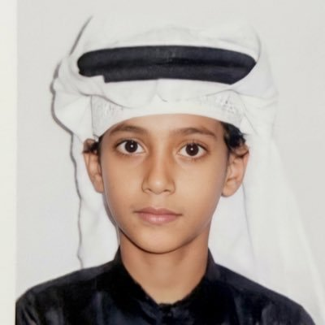

أنا وأنا صغير
هيثم الصغير
سيرة ذاتية بسيطة بطابع الزمن القديم
الحلم الكبير: أصير رائد فضاء
بطاقة الهوية الصغيرة
الاسم: هيثم
الهواية المفضلة: اقعد العب في البي سي اللي خربته خمس مرات وتوارثته من صلاح اخوي اللي ورثه من ابوي
المكان المفضل: الطراحة امدره بالمدريها
احب اروح ابها واحب اقعد بالوادي حق بيش
أشياء أعرفن أسويها
• أرسمون
• ألعبون
• أركبون ليغون
• أجمعون كراتين
مشاريعي الصغيرة
• 2009: أول موقع سويته، صفحة ويب أكلم فيها ذكاء اصطناعي بسيط يرد علي
• 2015: أول تطبيق سويته، يحول الملفات من وورد إلى PDF، وأقدر أختار نوع الصور أو الملفات حسب الرغبة
ملاحظة: هذه الصفحة خاصة جدًا ومخصصة لذكريات الطفولة.